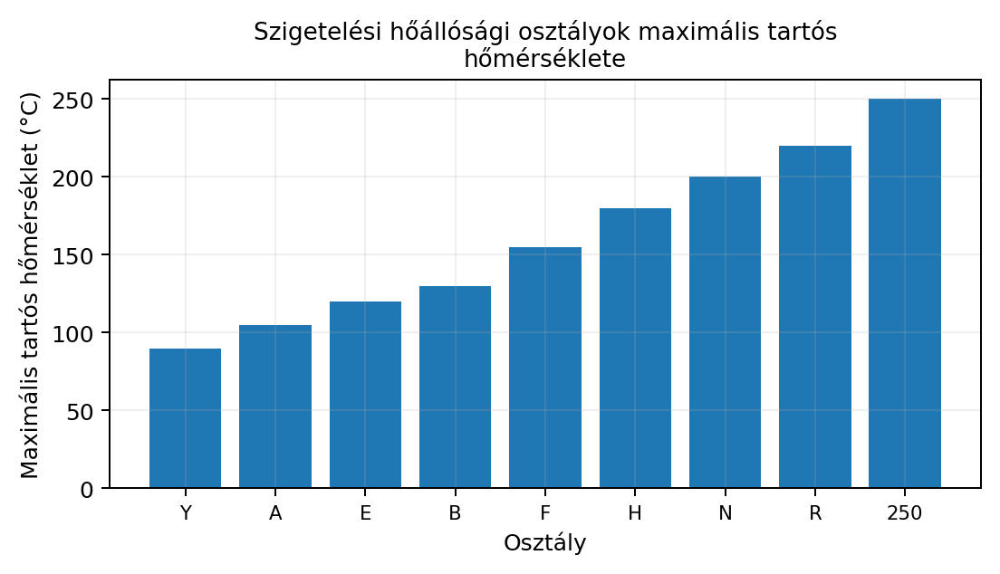

Egy műhelyben a hibás motort megbontják, és a szerelő a leégett tekercset nézi. A kérdés nemcsak az, hogy mi égett le, hanem az is, hogy miért égett le, és milyen anyagból kell az új tekercselést elkészíteni. Ha a szerelő rossz zománchuzalt vagy alacsonyabb hőállósági osztályú szigetelést választ, a javítás után a gép hamarosan újra meghibásodik, és akár tüzet is okozhat. A vaslemezek, tekercsvezetők és szigetelési osztályok ismerete ezért nem laboratóriumi elmélet, hanem a motor-, transzformátor- és kapcsolószekrény-javítás mindennapi feltétele.
A villamos gép anyagai együtt határozzák meg a gép megbízhatóságát, hatásfokát és hőállóságát. A vasmag anyaga a veszteségeket, a tekercsvezető anyaga az áram folyását, a szigetelőanyag pedig a megengedett üzemi hőmérsékletet és élettartamot. Ebben az alfejezetben ezeket a géptechnikai anyagokat ismerjük meg.
A transzformátorok, forgó gépek és fojtótekercsek vasmagja nem tömör vasból, hanem vékony, egymástól elszigetelt lemezekből készül. Ennek oka az, hogy a váltakozó mágneses fluxus a vasmagban is feszültséget indukál, és az így kialakuló örvényáramok a tömör vasban nagy melegedést és veszteséget okoznának. A lemezeléssel az örvényáram útját hosszú, nagy ellenállású útra kényszerítjük, így a veszteség drasztikusan csökken.
Definíció. A vaslemez (villamoslemez) olyan vékony, speciális ötvözésű acéllemez, amelyet vasmagok készítésére használnak. Anyaga jellemzően szilíciummal ötvözött acél, mert a szilícium növeli a fajlagos ellenállást, és csökkenti a hiszterézisveszteséget. A lemezeket vékony szigetelő réteggel látják el, hogy az egyes lemezek elektromosan ne érintkezzenek egymással.
Összefüggés. A váltakozó áramú vasmagokban fellépő teljes vasveszteség két fő részből áll:
ahol:
A lemezvastagság csökkentése tehát elsősorban az örvényáramú veszteséget csökkenti. Ezért a modern transzformátorlemezek vastagsága jellemzően 0,23–0,35 mm, a forgó gépekben 0,35–0,5 mm (ellenőrizendő: aktuális gyártói adatlapok).
Melegen és hidegen hengerelt lemezek
Lemezszigetelés. A lemezek közötti szigetelő réteg lehet gyári lakk, foszfátozott felület vagy speciális, vékony szervetlen bevonat. A lényeg, hogy a lemezek elektromosan el legyenek szigetelve, de a vasmag mágneses tulajdonságai ne romoljanak. A szigetelést nem szabad megsérteni: ha a lemezek összeérnek, az örvényáramú veszteség megnő, a vasmag jobban melegszik, és a gép hatásfoka romlik.
Az alábbi ábra (a) része egy forgógép állórészlemezét mutatja: a külső gyűrű a járom, a hornyok közötti vasrészek a fogak, a hornyokba kerül a tekercs, a furatban forog a forgórész. A (b) rész a lemezcsomagot és kinagyítva a felépítését mutatja: vékony, szilíciummal ötvözött acéllemezek, köztük vékony szigetelő bevonat. A (c)–(e) rész az örvényáram útját hasonlítja össze: a tömör vasban nagy köráram folyik (c), a lemezelt csomagban csak lemezenként kis hurkok alakulhatnak ki (d), a reszelt, sorjás élen viszont a lemezek fémesen összeérnek, és a hurok újra nagy lesz (e).
Az (e) kép a gyakorlati tanulság: javításkor a lemezcsomagot nem szabad reszelni vagy csiszolni, mert az összekent élek helyi melegedést okoznak („forró pont” a vasmagban). A HTML-kiadásban a részekre mutatva olvasható a szerepük.
A villamos gépek tekercseit leggyakrabban zománcozott huzalból csévélik. A huzal vörösréz vagy alumínium vezetőből és arra felvitt vékony, rugalmas, nagy átütési szilárdságú zománcszigetelésből áll. A zománc vastagsága néhányszor tíz mikrométer, mégis több száz vagy akár több ezer volt feszültséget is elvisel a menetek között. A réz a jó vezetőképessége miatt a legelterjedtebb, az alumínium pedig elsősorban transzformátorokban és nagyobb gépekben használatos, ahol a tömeg és az ár szerepet játszik.
Fontos jellemzők:
ahol az áramsűrűség, az áram, a vezető keresztmetszete. Léghűtéses kis- és közepes gépeknél a rezes tekercs tipikus megengedett áramsűrűsége 2–4 A/mm², olajhűtéses transzformátoroknál magasabb is lehet (ellenőrizendő: gyártói tervezési adat).
A tekercsvezető kiválasztásakor tehát nemcsak a keresztmetszetet, hanem a zománc hőállóságát, a mechanikai szilárdságot és a csévélhetőséget is figyelembe kell venni.
A(z) Szigetelőanyagok és műanyagok alfejezetben már bemutattuk a szigetelési hőállósági osztályokat. Most a gépekre alkalmazzuk őket. A szigetelési osztály betűjele azt a maximális tartós üzemi hőmérsékletet adja meg, amelyet a szigetelőanyag a várható élettartam alatt elvisel.

Szabvány. A villamos szigetelések hőállósági osztályait az MSZ EN 60085 sorozat tárgyalja (ellenőrizendő: aktuális kiadás). A forgó villamos gépek megengedett melegedését és a mérési módszereket a gépszabvány, például az MSZ EN 60034-1 (ellenőrizendő: pontos szám és kiadás) tartalmazza. Az osztályok a szigetelőanyag maximális tartós hőmérsékletét rögzítik, például:
A megengedett melegedés az a hőmérséklet-emelkedés, amelyet a szigetelés a környezeti hőmérséklethez képest elérhet. Ha a környezet hőmérséklete , a szigetelés maximális tartós hőmérséklete , akkor az elvi megengedett melegedés:
A gyakorlatban a megengedett melegedés a mérési módszertől függ (ellenállásmódszer, hőelemes mérés, beágyazott hőmérséklet-érzékelő), és a gépszabvány pontos határértékeket ad. A környezeti hőmérsékletet általában 40 °C-ra veszik, de ez a besorolási feltétel, nem mindig azonos a tényleges üzemi környezettel (ellenőrizendő).
A szigetelési osztály tehát nem a gép megengedett melegedése, hanem a szigetelőanyag hőállóságának osztálya. Például egy B osztályú szigetelésű motor 130 °C-os tekercshőmérsékletig üzemelhet tartósan, ezért 40 °C-os környezetben az elvi melegedés legfeljebb 90 K lehet, de az MSZ EN 60034-1 szerinti ellenőrzési szabályok szerint a megengedett melegedés ennél kisebb: ellenállásmódszerrel B osztálynál tipikusan 80 K, F osztálynál 105 K, H osztálynál 125 K (ellenőrizendő: MSZ EN 60034-1, gyártói adatlap), mert a mérési pont nem a legmelegebb helyet mutatja. A rendszer: osztályhatár − 40 °C − a legmelegebb pont többlete (kb. 10–15 K): B: 130 − 40 − 10 = 80 K; F: 155 − 40 − 10 = 105 K; H: 180 − 40 − 15 = 125 K.
| Osztály | Max. hőmérséklet | Megengedett melegedés (ellenállásmódszer) | Különbség 40 °C-os környezetben |
|---|---|---|---|
| B | 130 °C | 80 K | 130 − (40 + 80) = 10 K |
| F | 155 °C | 105 K | 155 − (40 + 105) = 10 K |
| H | 180 °C | 125 K | 180 − (40 + 125) = 15 K |
(Szemléltető értékek, ellenőrizendő: MSZ EN 60034-1.) A pontos értékeket mindig az aktuális gépszabvány és a gyártói adatlap tartalmazza.
A nagyobb transzformátorokban és egyes kapcsolókészülékekben transzformátorolajat használnak. Az olajnak kettős szerepe van: egyrészt szigetelőközeg, másrészt hűtőközeg. A tekercsek által termelt hőt az olaj elszállítja a radiátorokhoz vagy a hűtőrendszerhez. Az olaj fontos paraméterei:
Az olajat zártan kell tárolni, mert a levegőből nedvességet vesz fel. A nedves olaj átütési szilárdsága a töredékére csökkenhet.
Szigetelőlapok. A tekercsek közötti és a tekercs–vasmag közötti szigetelésre lemezes anyagokat használnak: bakelit, üvegtextil, aramid papír (például Nomex), poliészter film (például Mylar), poliimid film (például Kapton). Ezeket a hőállósági osztályhoz kell igazítani; egy F osztályú tekercsben nem használhatunk A osztályú papírt, mert az a megengedett hőmérsékleten öregszik, szakad és elveszíti szigetelőképességét.
Csévetest. A csévetest a tekercs hordozója, amelyre a huzalt rendezetten felcsévélik. Anyaga leggyakrabban hőre keményedő műanyag, például üvegerősítésű poliészter vagy bakelit, illetve kisméretű tekercseknél hőálló hőre lágyuló műanyag. A csévetest anyagának hőállósága is legalább az adott szigetelési osztályhoz tartozó hőmérsékletet kell hogy elviselje.
Az alábbi ábra összefoglalja a tekercs anyagait. A zománcozott körhuzalban (a) a réz- vagy alumíniumvezetőt alap- és fedőzománc borítja (a rétegek néhányszor 10 µm vastagok, a rajz túlozza őket); a lapos (szalag) vezetőt (b) zománc vagy papír-, üvegszálszalag szigeteli; a huzaldob címkéjén (c) a legfontosabb adat a hőosztály. A (d) rész a szigetelési rendszert láncként mutatja egy F osztályú motorban: a zománchuzal, a horonyszigetelés, a fázisközi szigetelés, az impregnálólakk és a csévetest, kötözés mind legalább 155 °C-os osztályú kell legyen.
A (d) részen egy elem hibás: az E osztályú (120 °C) fázisközi szigetelés a 155 °C-ig terhelhető tekercsben gyorsan öregszik, ezért ez lesz a leggyengébb láncszem, és a gép az F osztályú huzal ellenére sem bírja a névleges melegedést. Javításkor ezért minden beépített anyag hőosztályát ellenőrizni kell, nem csak a huzalét. A HTML-kiadásban a láncszemekre mutatva olvasható az értékelésük.
Egy javítóműhelyben beérkezik egy háromfázisú rövidre zárt forgórészű aszinkronmotor. Az adattáblán a szigetelési osztály: F (155 °C). A szerelő megméri a tekercs ellenállását 20 °C-os környezetben: . Ezután névleges terheléssel járatja a motort, és a meleg állapotú ellenállás . A réz hőmérsékleti tényezője . Kérdés: mekkora a meleg tekercs hőmérséklete, és megfelel-e a motor az F osztálynak?
Számítás. A réz ellenállásának hőmérsékletfüggése:
ahol . Az egyenletet -re rendezzük:
Behelyettesítés:
Ellenőrzés: a melegedés a 20 °C-os környezethez képest . Az F osztályú gépre ellenállásmódszerrel tipikusan 105 K melegedés engedhető meg (ellenőrizendő: MSZ EN 60034-1, gyártói adatlap); , tehát a motor megfelel. A 155 °C-hoz közvetlenül nem hasonlítunk, mert a legmelegebb pont hőmérséklete az átlagnál nagyobb. Ha a környezet ténylegesen 40 °C lett volna, a tekercs hőmérséklete lenne, amit a megengedett értékhez kell hasonlítani (nem a 155 °C-hoz): a melegedés változatlanul 89,1 K, ami a 105 K alatt marad. A motor az F osztályú szigeteléssel megfelelő. ∎
Ez a példa mutatja, hogy a tekercsellenállás-mérés egyszerű eszköz a hőmérséklet becslésére, de az éles ellenőrzéshez az aktuális gépszabvány mérési módszereit kell alkalmazni.
Egy karbantartó üzemben egy régi, B osztályú szivattyúmotort újratekercseltek. A tekercselő a meglévő készletből E osztályú (120 °C) zománchuzalt használt, mert az olcsóbb volt, és a méret passzolt. A motor az első hetekben üzemelt, majd a tekercs zárlatos lett, és a védelem lekapcsolta. A vizsgálat kimutatta, hogy a motor a terhelés miatt a tekercsben elérte a 125–130 °C-os átlaghőmérsékletet, ami már a B osztály megengedett 120 °C-os átlaghőmérsékletét (40 °C-os környezetben, ellenállásmódszerrel) is meghaladta: a motor túlterhelt volt, és az E osztályú zománc még gyorsabban öregedett. A hibás anyagválasztás miatt a motor újratekercselése és az állásidő többe került, mint a megfelelő huzal lett volna.
Tanulság: a szigetelési osztály a teljes tekercsre vonatkozik; nem elég a csévetestet vagy a szigetelőlapot megnézni, a zománchuzal hőállóságát is legalább az adattáblán szereplő osztályhoz kell igazítani. Biztonsági korlát. A hálózati feszültségű gépek tekercselése, megbontása és javítása csak jogosult személynek, feszültségmentesítés után megengedett. A feszültségmentesítés öt biztonsági szabályát mindig be kell tartani: lekapcsolás, visszakapcsolás elleni biztosítás, feszültségmentesség ellenőrzése, földelés és rövidre zárás, szomszédos feszültség alatti részek lefedése.
A lemezszigetelés megsértése. A vasmagot reszelővel vagy csiszolóval alakítják, és a lemezek között fémes összeérések keletkeznek. Az örvényáramú veszteség megnő, a vasmag melegszik, a gép hatásfoka romlik. Helyes gyakorlat: a lemezeket csak a gyártó által megengedett módon szabad alakítani, és a sérüléseket kerülni kell.
Alacsonyabb hőosztályú zománchuzal beépítése. Ha az eredeti F osztály helyett B vagy E osztályú huzalt használ a szerelő, a motor rövid idő alatt tönkremegy. Helyes gyakorlat: mindig az adattábla szerinti vagy annál magasabb osztályú huzalt válasszunk, és dokumentáljuk a cserét.
A transzformátorolaj nyitott tárolása. Az olaj a levegőből nedvességet vesz fel, ezért az átütési szilárdsága lecsökken. A nedves olajjal töltött transzformátor szigetelése megbízhatatlan. Helyes gyakorlat: az olajat zárt, száraz edényben tárolni, és beöntés előtt ellenőrizni az átütési feszültséget.
A melegedés és a szigetelési osztály összekeverése. Sokan azt hiszik, hogy az F osztályú motor 155 °C-os melegedést enged meg. Valójában a 155 °C a megengedett tartós tekercshőmérséklet, nem a hőmérséklet-emelkedés. A megengedett melegedés a környezeti hőmérséklet figyelembevételével, a mérési módszer szerint sokkal kisebb. Helyes gyakorlat: a gépszabvány szerinti melegedéshatárt és mérési előírást használni.
1. feladat (A) Sorold fel a vaslemezek ötvözésének és lemezszigetelésének szerepét.
2. feladat (A) Egy tekercs vezetőjének keresztmetszete , a rajta folyó áram . Számítsd ki az áramsűrűséget -t.
3. feladat (B) Egy motor tekercsének hideg ellenállása 25 °C-on . Meleg állapotban a mért ellenállás . A réz hőmérsékleti tényezője . Számítsd ki a meleg tekercs hőmérsékletét és a tekercs melegedését a 25 °C-os környezethez képest. H osztályú (180 °C) szigetelés esetén megfelel-e az eredmény?
4. feladat (B) Egy F osztályú (155 °C) motort 40 °C-os környezetben kell üzemeltetni. A gépszabvány szerinti megengedett melegedés ellenállásmódszerrel 105 K (ellenőrizendő: pontos érték a gyártói adatlapról). Mekkora lehet a tekercs átlaghőmérséklete a számítás szerint? Mekkora különbség marad a 155 °C-ig, és mire szolgál?
5. feladat (C) Egy transzformátor vasmagjában a hiszterézisveszteség , az örvényáramú veszteség . A terhelés során a vasveszteség állandó. Mekkora a teljes vasveszteség? Ha a lemezvastagságot a felére csökkentenénk, az örvényáramú veszteség a negyedére változik (arányos a vastagság négyzetével). Számítsd ki az új vasveszteséget, és becsüld meg a veszteségcsökkenés százalékát.
6. feladat (D) Egy javítóműhelyben az alábbi zománchuzal-tekercsek állnak rendelkezésre: - 130 °C-os zománc, - 155 °C-os zománc, - 180 °C-os zománc.
A beérkezett motor adattáblája szerint a szigetelési osztály F. Válaszd ki a megfelelő zománchuzalt, és indokold a választást. Milyen szigetelőlapot választanál a tekercs és a vasmag közé, ha a műhelyben A, B, F és H osztályú lapok kaphatók?
1. feladat (A)
Az ötvözés (jellemzően szilícium) növeli a fajlagos ellenállást, csökkenti a hiszterézisveszteséget. A lemezszigetelés megakadályozza az örvényáramok átfolyását a lemezek között, így csökkenti az örvényáramú veszteséget.
2. feladat (A)
Ez a léghűtéses tekercselésre jellemző tartományban van.
3. feladat (B)
A képlet:
Megjegyzés: az a 20 °C-os referenciára vonatkozik, ezért 25 °C-os hideg hőmérsékletnél a lineáris képlet kis hibát ad. Pontosabban, a Tekercselés, impregnálás, csapágyak és szénkefe alfejezetben használt arányos alakkal ; a következtetés nem változik.
A melegedés: . H osztályú szigetelésnél ellenállásmódszerrel tipikusan 125 K melegedés engedhető meg (ellenőrizendő: MSZ EN 60034-1, gyártói adatlap); , tehát a tekercs megfelel. (A 180 °C-hoz közvetlenül nem hasonlítunk, mert a legmelegebb pont az átlagnál melegebb.)
4. feladat (B)
A maximális tartós hőmérséklet:
A különbség . Ez nem üzemi tartalék: ez fedezi, hogy a tekercs legmelegebb pontja az ellenállásmódszerrel mért átlaghőmérsékletnél melegebb. Ha a mért melegedés eléri a 105 K-t, a gép a határon üzemel (ellenőrizendő: MSZ EN 60034-1, gyártói adatlap). Ugyanez az érvelés, mint a 29.1.6 példában és a 3. feladatban.
5. feladat (C)
A teljes vasveszteség most:
Ha a lemezvastagság felére csökken, az örvényáramú veszteség a negyedére változik:
Az új vasveszteség:
A csökkenés: . A hiszterézisveszteség változatlan marad, mert az nem függ a lemezvastagságtól.
6. feladat (D)
Az F osztályú motorhoz legalább 155 °C-os zománchuzalt kell választani. Tehát a 155 °C-os zománc megfelel, a 180 °C-os is jó, de drágább. A 130 °C-os (B osztályú) zománc nem alkalmas, mert az F osztály 155 °C-os határa alatt van. A tekercs és a vasmag közé F osztályú szigetelőlapot választunk (a felsoroltak közül F vagy H, attól függően, hogy a hűtés és a hőmérsékleti tartalék mit kíván; az F a minimálisan szükséges). A szigetelőlap hőállóságának legalább az F osztályt el kell érnie, különben az a leggyengébb láncszem lesz.
A villamos gépek anyagai határozzák meg a gép működését és élettartamát. A vasmag lemezelt szilíciumacélból készül, mert a lemezelés csökkenti az örvényáramú veszteséget, a szilícium pedig a hiszterézisveszteséget. A lemezeket vékony szigeteléssel látjuk el, amelyet nem szabad megsérteni. A tekercsvezetők zománcozott réz- vagy alumíniumhuzalok, nagyobb keresztmetszetnél szalagok. A zománc hőállósága a szigetelési osztályhoz igazodik; az osztály betűjele a megengedett maximális tartós üzemi hőmérsékletet adja (pl. B = 130 °C, F = 155 °C, H = 180 °C). A megengedett melegedés a környezeti hőmérséklet és a mérési módszer figyelembevételével kisebb a hőosztály-határnál. A transzformátorolaj a szigetelés és a hűtés közege, nedvességtől védve kell tartani. A szigetelőlapok és a csévetest anyagát szintén a hőállósági osztályhoz kell illeszteni. Továbbvitt eredmény. A vaslemezek, zománchuzalok, szigetelési osztályok és a melegedés fogalma alapvető a Tekercselés, impregnálás, csapágyak és szénkefe alfejezetben, ahol a tekercselés gyakorlati kivitelezését, az impregnálást és a gép további anyagait tanuljuk.
Az alfejezet a klasszikus villamosgép-anyagismereten és a gyakorlati szerelői tapasztalaton alapul. A hőállósági osztályok betűjelei és értékei az MSZ EN 60085 sorozat szerintiek, de az aktuális kiadást és a pontos osztályonkénti anyagbesorolást ellenőrizni kell. A forgó gépek megengedett melegedésértékei és mérési módszerei az MSZ EN 60034-1 szabvány szerint változhatnak, ezért a konkrét határértékeket mindig a gyártói adatlap és a hatályos szabvány alapján kell használni. A vaslemez vastagságra, áramsűrűségre és zománchuzal-hőállóságra adott értékek tájékoztató jellegűek, iparági gyakorlatból származnak.